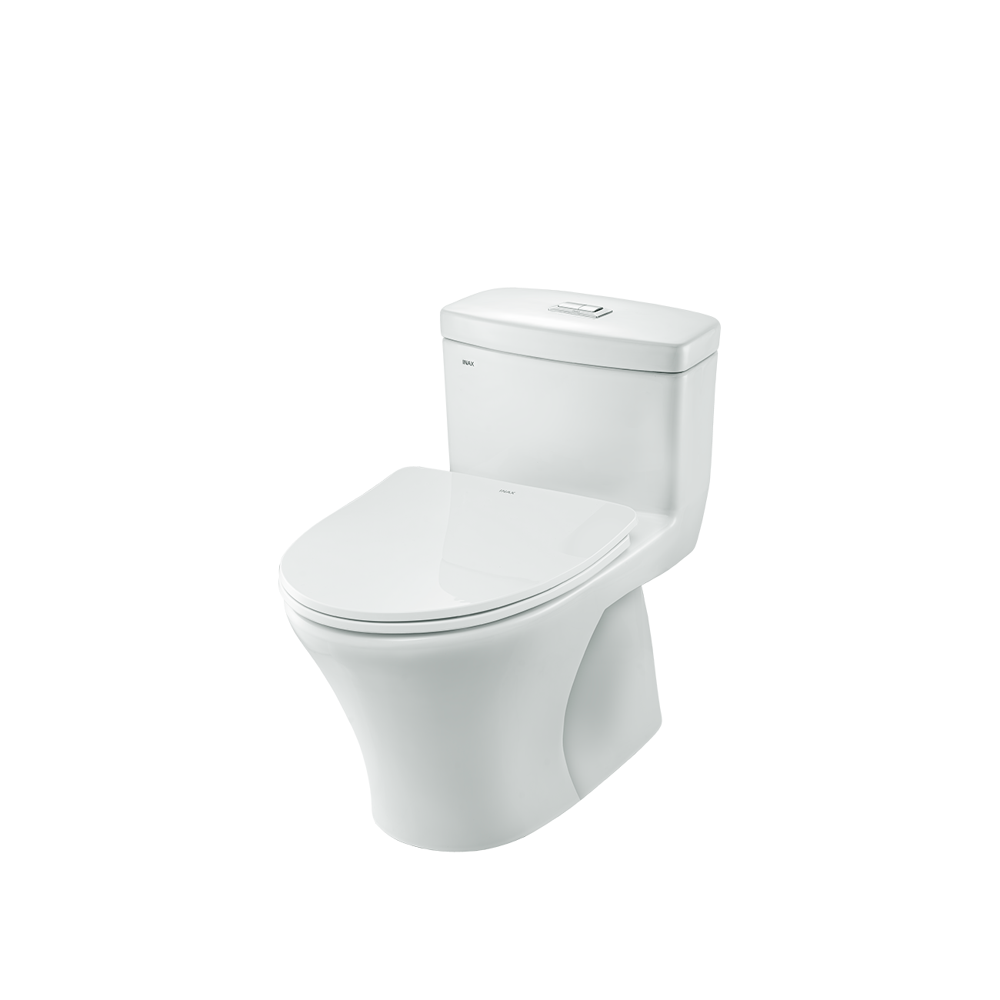
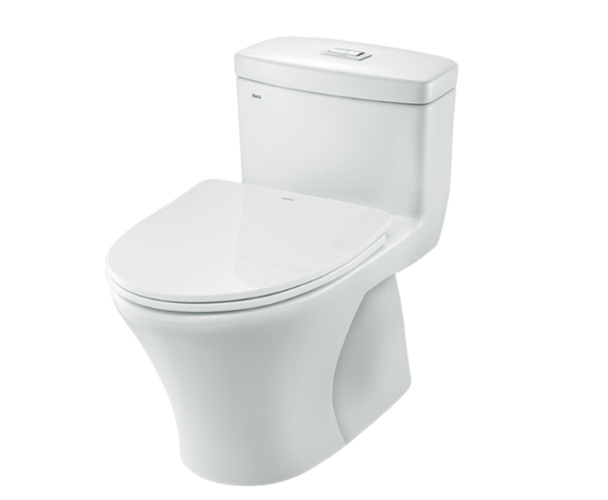
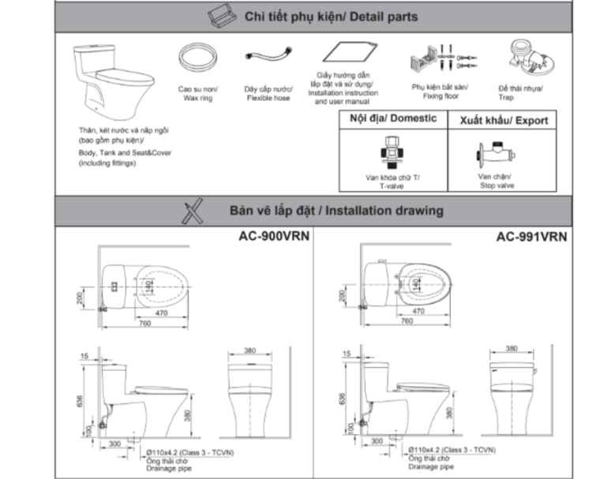

Bồn cầu 1 khối AC-900VRN-2 có thiết kế 1 khối liền mạch gọn gàng, kích thước tổng thể 384 x 755 x 633 (mm), phù hợp với hầu hết cấu trúc phòng tắm, kể cả không gian nhỏ. Sản phẩm có màu trắng tinh tế, mang đến vẻ đẹp sang trọng và hiện đại cho nhà tắm của bạn.Thiết kế bồn cầu 1 khối AC-900VRN-2 thông minhNắp CF-600VS có thiết kế mỏng, nhẹ, chuyển động êm ái, tránh va đập mạnh và không gây tiếng ồn khó chịu khi sử dụng bồn cầu.Nắp tank nước mỏng giúp tối ưu hóa không gian đặt vật dụng.Tính năng nổi bật của bồn cầu 1 khối AC-900VRN-2Công nghệ men sứ Aqua Ceramic: Là công nghệ độc quyền của INAX, Aqua Ceramic tạo lớp bề mặt siêu ưa nước, giúp nước đẩy chất bẩn cũng như cặn nước tách khỏi bề mặt sứ và làm sạch dễ dàng. Từ đó, người dùng có thể vệ sinh bồn cầu nhanh chóng, dễ dàng hơn, duy trì sự sạch sẽ cho không gian phòng tắm.Hai mức xả tiết kiệm nước: Hai chế độ xả linh hoạt với 6,5 L cho xả đại và 4,5 L cho xả tiểu giúp người dùng tối ưu hóa lượng nước sử dụng theo nhu cầu và tiết kiệm chi phí sinh hoạt.Hệ thống xả hiệu ứng siphon: Với cơ chế xả xoáy mạnh mẽ, công nghệ này tạo một lực hút lớn cuốn sạch mọi chất bẩn chỉ trong một lần xả mà không gây tiếng ồn khó chịu cho người dùng.Kỹ thuật xả rửa vành Rim: Thiết kế vành kín Rimless trơn láng, không góc khuất, không vết ghép nối giúp người dùng dễ dàng vệ sinh. Lỗ xả nước hướng vào phía trong, thêm một cửa xả lớn làm tăng sức mạnh xả rửa.Video giới thiệu công nghệ Aqua Ceramic độc quyền của INAXĐể tạo sự đồng bộ cho không gian phòng tắm, có thể kết hợp bồn cầu 1 khối AC-900VRN-2 với các mẫu chậu rửa đặt bàn INAX AL-294V, chậu rửa dương bàn AL-2398V, chậu rửa dương bàn L-288V. Các sản phẩm này có thiết kế và chất liệu tương đồng, tạo nên tổng thể hài hòa và sang trọng.Bản vẽ lắp đặt bồn cầu 1 khối AC-900VRN-2Bản vẽ lắp đặt bồn cầu 1 khối AC-900VRN-2Hướng dẫn lắp đặt bồn cầu 1 khối AC-900VRN-2Xem file Hướng dẫn lắp đặt sản phẩm tại đây.Thông số kỹ thuậtChất liệuSứKiểu dáng1 khốiKích thước755 x 384 x 633 (mm) (Sâu x Rộng x Cao)Tính năng và Công nghệ- Công nghệ men sứ Aqua Ceramic chống bám bẩn, giữ cho bề mặt luôn sáng bóng. - Kỹ thuật xả rửa vành Rim giúp tăng sức mạnh xả rửa tối đa. - Hệ thống xả hiệu ứng siphon với 4,8L (xả đại) và 3.0L (xả tiểu) giúp tiết kiệm nước tối ưu. - Chống bám cặn, chống bám bẩn, nắp đóng êm, vành hộp vệ sinh, tiết kiệm nước.Thương hiệuINAXThiết kế- Thiết kế nắp ngồi mỏng nhẹ, không gây tiếng ồn khó chịu khi sử dụng. - Nắp tank nước mỏng giúp tối đa hóa diện tích đặt vật dụng. - Sản phẩm phù hợp cho mọi không gian nhà vệ sinh, kể cả nhà vệ sinh có diện tích nhỏ hẹpMàu sắcTrắngKhác- Sản phẩm không bao gồm van chặn nước - Gợi ý sản phẩm đi kèm: chậu rửa đặt bàn AL-294V, AL-2398V, chậu rửa dương bàn L-288V - Hotline tư vấn và bảo hành: 18006633
Bồn cầu 1 khối AC-900VRN-2
Bàn cầu thương hiệu INAX.
Đã cập nhật danh sách yêu thích.
DANH MỤC: Bàn cầu
MÃ SẢN PHẨM: AC-900VRN-2
DEPTH: 760mm
HEIGHT: 636mm
WIDTH: 380mm
Bồn cầu 1 khối AC-900VRN-2 có thiết kế 1 khối liền mạch gọn gàng, kích thước tổng thể 384 x 755 x 633 (mm), phù hợp với hầu hết cấu trúc phòng tắm, kể cả không gian nhỏ. Sản phẩm có màu trắng tinh tế, mang đến vẻ đẹp sang trọng và hiện đại cho nhà tắm của bạn.Thiết kế bồn cầu 1 khối AC-900VRN-2 thông minhNắp CF-600VS có thiết kế mỏng, nhẹ, chuyển động êm ái, tránh va đập mạnh và không gây tiếng ồn khó chịu khi sử dụng bồn cầu.Nắp tank nước mỏng giúp tối ưu hóa không gian đặt vật dụng.Tính năng nổi bật của bồn cầu 1 khối AC-900VRN-2Công nghệ men sứ Aqua Ceramic: Là công nghệ độc quyền của INAX, Aqua Ceramic tạo lớp bề mặt siêu ưa nước, giúp nước đẩy chất bẩn cũng như cặn nước tách khỏi bề mặt sứ và làm sạch dễ dàng. Từ đó, người dùng có thể vệ sinh bồn cầu nhanh chóng, dễ dàng hơn, duy trì sự sạch sẽ cho không gian phòng tắm.Hai mức xả tiết kiệm nước: Hai chế độ xả linh hoạt với 6,5 L cho xả đại và 4,5 L cho xả tiểu giúp người dùng tối ưu hóa lượng nước sử dụng theo nhu cầu và tiết kiệm chi phí sinh hoạt.Hệ thống xả hiệu ứng siphon: Với cơ chế xả xoáy mạnh mẽ, công nghệ này tạo một lực hút lớn cuốn sạch mọi chất bẩn chỉ trong một lần xả mà không gây tiếng ồn khó chịu cho người dùng.Kỹ thuật xả rửa vành Rim: Thiết kế vành kín Rimless trơn láng, không góc khuất, không vết ghép nối giúp người dùng dễ dàng vệ sinh. Lỗ xả nước hướng vào phía trong, thêm một cửa xả lớn làm tăng sức mạnh xả rửa.Video giới thiệu công nghệ Aqua Ceramic độc quyền của INAXĐể tạo sự đồng bộ cho không gian phòng tắm, có thể kết hợp bồn cầu 1 khối AC-900VRN-2 với các mẫu chậu rửa đặt bàn INAX AL-294V, chậu rửa dương bàn AL-2398V, chậu rửa dương bàn L-288V. Các sản phẩm này có thiết kế và chất liệu tương đồng, tạo nên tổng thể hài hòa và sang trọng.Bản vẽ lắp đặt bồn cầu 1 khối AC-900VRN-2Bản vẽ lắp đặt bồn cầu 1 khối AC-900VRN-2Hướng dẫn lắp đặt bồn cầu 1 khối AC-900VRN-2Xem file Hướng dẫn lắp đặt sản phẩm tại đây.Thông số kỹ thuậtChất liệuSứKiểu dáng1 khốiKích thước755 x 384 x 633 (mm) (Sâu x Rộng x Cao)Tính năng và Công nghệ- Công nghệ men sứ Aqua Ceramic chống bám bẩn, giữ cho bề mặt luôn sáng bóng. - Kỹ thuật xả rửa vành Rim giúp tăng sức mạnh xả rửa tối đa. - Hệ thống xả hiệu ứng siphon với 4,8L (xả đại) và 3.0L (xả tiểu) giúp tiết kiệm nước tối ưu. - Chống bám cặn, chống bám bẩn, nắp đóng êm, vành hộp vệ sinh, tiết kiệm nước.Thương hiệuINAXThiết kế- Thiết kế nắp ngồi mỏng nhẹ, không gây tiếng ồn khó chịu khi sử dụng. - Nắp tank nước mỏng giúp tối đa hóa diện tích đặt vật dụng. - Sản phẩm phù hợp cho mọi không gian nhà vệ sinh, kể cả nhà vệ sinh có diện tích nhỏ hẹpMàu sắcTrắngKhác- Sản phẩm không bao gồm van chặn nước - Gợi ý sản phẩm đi kèm: chậu rửa đặt bàn AL-294V, AL-2398V, chậu rửa dương bàn L-288V - Hotline tư vấn và bảo hành: 18006633
DANH MỤC: Bàn cầu
MÃ SẢN PHẨM: AC-900VRN-2
DEPTH: 760mm
HEIGHT: 636mm
WIDTH: 380mm